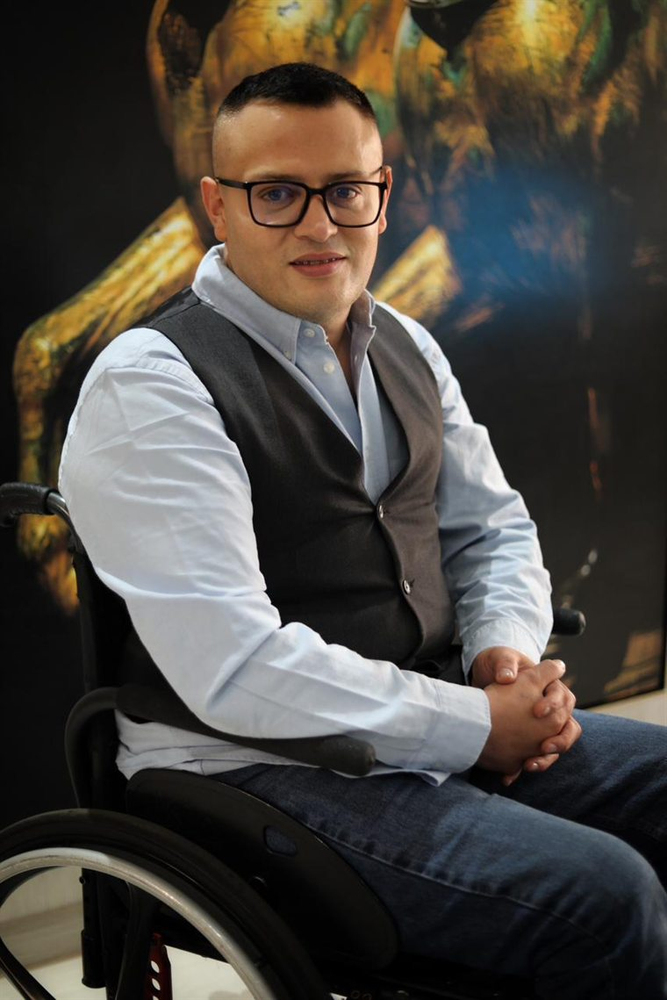
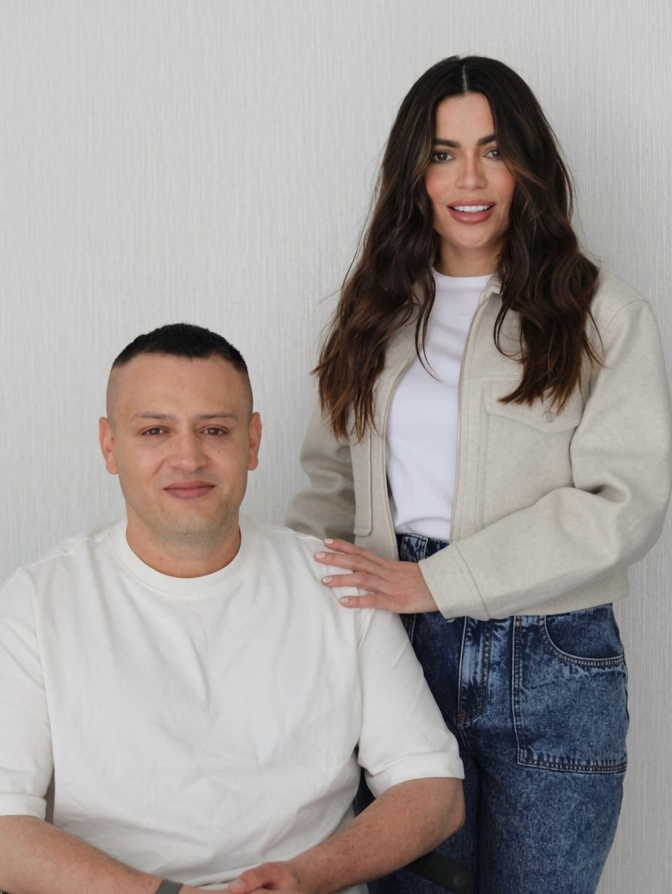
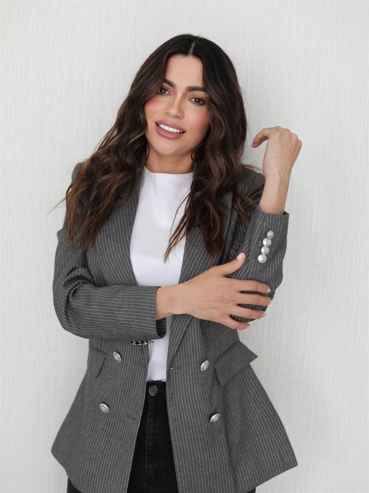

Creador y anfitrión
John Vanegas
En cada conversación se sienta frente al invitado para descubrir el motivo que lo sostuvo cuando todo parecía perdido. Perfil ampliado próximamente.
John Vanegas y Nidian Aguilar conversan con personas que atravesaron momentos decisivos y encontraron una razón para seguir. Testimonios reales, sin guion, sobre resiliencia, fe y propósito.

La conversación completa, con las miradas y los silencios que no caben en el audio.
play_circle Ver ahoraMotivos nace de una convicción sencilla: las lecciones más luminosas de la vida no aparecen en el triunfo fácil, sino en la vulnerabilidad asumida con coraje y dignidad.
En cada episodio, John Vanegas y Nidian Aguilar se sientan frente a personas reales —sobrevivientes, líderes, artistas, cuidadores— para descubrir el motivo que las mantuvo en pie cuando todo parecía perdido.

En cada conversación se sienta frente al invitado para descubrir el motivo que lo sostuvo cuando todo parecía perdido. Perfil ampliado próximamente.

Esposa, mamá, empresaria y estudiante de Derecho en la Universidad Militar Nueva Granada. Cofundadora de Motivos Podcast y de la Fundación Motivos V.N. – Vidas Nuevas, enfocada en crear oportunidades, promover la inclusión y generar impacto social. Cree en la educación, el liderazgo con propósito y el servicio como formas de transformar vidas.
"Cada historia tiene un motivo"
Creemos en el poder de las historias reales para inspirar, conectar y despertar propósito.
Sin filtros ni juicios predeterminados.
Esperanza viva que sostiene en el desierto.
Historias que mueven a la acción solidaria.
 Wyll
Wyll
Dejó el micrófono por el uniforme como comandante de explosivos del Ejército. Una historia de perdón a un padre, reconciliación y resurrección artística.
 Hilsen Durán
Hilsen Durán
Enfermera jefe de la Clínica de Heridas del Hospital Militar Central. Testimonio de amor humanizado cuando la vida pende de un hilo.
 Experiencia Límite
Experiencia Límite
Un impacto en combate, una experiencia cercana a la muerte y la silla de ruedas que se volvió plataforma para levantar a miles de jóvenes.
No son números ni métricas de audiencia: son personas que encontraron en una conversación una razón para seguir.
Este podcast me recordó que las heridas no son el final de la historia, sino el prólogo de una misión con propósito.
Escuchar Motivos me devolvió la certeza de que el dolor compartido sana a quien lo cuenta y a quien lo escucha.
La verdad que se siente en cada conversación es única. No hay poses ni marketing; solo personas reales.
Además del podcast, Motivos crece con nuevos espacios de conversación. Estos son los proyectos en marcha.
Historias que inspiran y transforman vidas
Un espacio más cercano y espontáneo, con el café de por medio: conversaciones sobre las historias que inspiran y transforman vidas. Se emite únicamente en el canal de YouTube de Motivos.
Ver en YouTubeCada producto financia la producción independiente de nuevos testimonios de fe y resiliencia en comunidades vulnerables.
 Edición Lanzamiento
Edición Lanzamiento
Algodón peinado orgánico de alto gramaje con bordado minimalista y puños reforzados.
✓ Envíos nacionales e internacionales Térmico 24h
Térmico 24h
Grabado láser oficial de 750ml con doble pared al vacío. Bebidas frías 24h / calientes 12h.
✓ Libre de BPA • Cierre hermético Hecho a Mano
Hecho a Mano
Barro rústico y esmalte natural con la frase 'Historias que Inspiran'. Piezas únicas numeradas.
✓ Apto microondas • Cerámica vivaLleva las reflexiones del podcast a tu vida diaria, tu equipo y tu organización.
Un cuaderno físico en tapas duras de lino y guía digital en PDF con 52 ejercicios de gratitud semanal, preguntas profundas para momentos de crisis y bitácora de autoencuentro inspirada en las grabaciones.
Agenda un espacio de mentoría y acompañamiento con el equipo de Motivos Podcast, una conferencia inspiracional para tu empresa o una entrevista de perfil humano con cobertura de producción.
Postula tu testimonio o el de un ser querido para los próximos capítulos. El equipo de Motivos evalúa cada mensaje con empatía, prudencia y absoluto respeto.
La verdad de las cámaras, el silencio previo y el abrazo cuando se apaga la luz roja.
 La escucha atenta de John
La escucha atenta de John
 Espacios de paz y diálogo
Espacios de paz y diálogo
 Vulnerabilidad sin máscaras
Vulnerabilidad sin máscaras
 El santuario antes de encender micrófonos
El santuario antes de encender micrófonos
El contenido completo de video, clips íntimos y reflexiones exclusivas antes de cada estreno.
Disfruta cada episodio con las tomas de cámara multicámara en estudio, expresiones humanas, miradas y momentos no editados que no caben en el audio. Suscríbete y activa la campana para estrenos semanales.
Cada domingo enviamos una reflexión inédita que no compartimos en redes, aprendizajes del episodio y el enlace prioritario antes del estreno general.
Para alianzas institucionales, invitaciones a medios, conferencias o temas de prensa: